Les gars, je viens de trouver le truc le plus fou pour des plateformes comme Lovable. Je ne mens pas en disant ça, c'est la chose la plus intéressante que j'aie trouvée depuis que j'ai découvert des plateformes comme Lovable et Bolt.new. Si vous avez créé des applications avec ces plateformes, elles n'ont peut-être pas la plus belle interface utilisateur, mais ce truc que je vais vous montrer change tout.
Interface & Outils : Page web affichée sur un téléviseur vintage.
Contenu textuel & Code : Texte publicitaire et slogan "The NPM for Design Engineers".
Action / Démonstration : Le présentateur introduit son sujet en montrant des visuels d'illustration sur un vieux poste de télévision.
Si vous restez jusqu'à la fin de cette vidéo, je vais vous montrer comment vous pourriez copier des composants d'interface utilisateur dans votre propre application en utilisant cette plateforme appelée 21st.dev. Cette plateforme est essentiellement un répertoire d'un tas de composants d'interface utilisateur différents que vous pouvez utiliser dans vos propres applications et les intégrer instantanément.
Interface & Outils : Navigateur web, plateforme 21st.dev, éditeur de composants UI.
Contenu textuel & Code : Répertoire de composants d'interface utilisateur (UI), grille de miniatures de design de landing pages et éléments interactifs.
Action / Démonstration : Navigation et présentation du catalogue de composants UI de la plateforme 21st.dev.
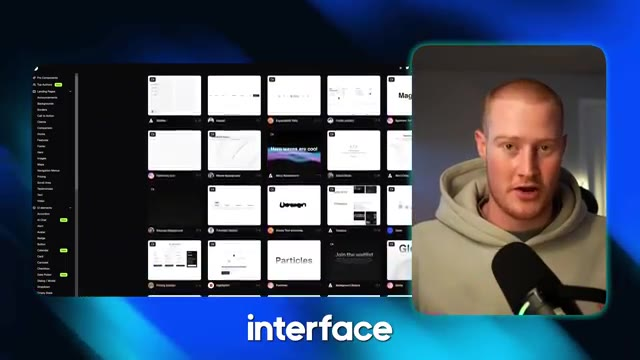
🔍 AgrandirTrès bien, cela étant dit, je veux foncer et vous montrer ça en vrai. Les gars, c'est tout simplement la chose la plus dingue que j'aie vue en ce qui concerne des plateformes comme Bolt.new, Lovable, toutes ces plateformes pour créer avec l'IA. J'ai trouvé ce truc qui va complètement changer la façon dont vous créez vos applications et donne à l'interface utilisateur un air spectaculaire. C'est fou.
Interface & Outils : Navigateur web affichant une application web hébergée sur Lovable (lovable.app) et webcam du présentateur.
Contenu textuel & Code : Page de garde d'une application web avec le titre 'AI for Non-Techies', un effet lumineux central bleu et une barre de navigation flottante comportant plusieurs icônes.
Action / Démonstration : Présentation visuelle et démonstration en direct de l'interface utilisateur générée par l'IA sur la plateforme Lovable.
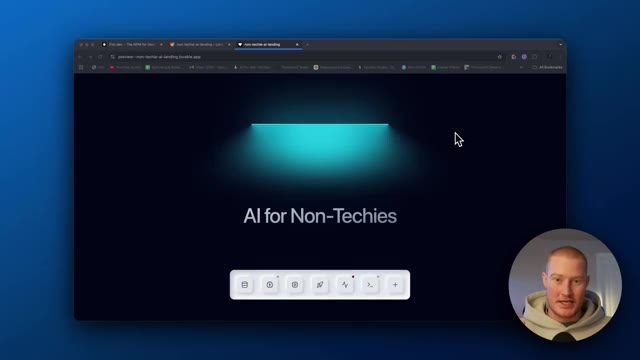
🔍 AgrandirDonc tout d'abord, je veux vous montrer ceci que j'ai construit très rapidement, je veux juste vous montrer les composants d'interface utilisateur. Regardez comme c'est beau et incroyable, regardez ça ici. Ces petits, ce petit dock de ces choses que vous pouvez voir ici pour la liste d'attente. Le bouton de la liste d'attente a un joli petit effet de lueur. Les tarifs, ça a l'air incroyable. Regardez cette animation ici les gars. Ça a l'air génial. Je vais vous montrer exactement comment faire cela dans cette vidéo. J'ai donc trouvé ce répertoire appelé 21st.dev et ce qu'est ce répertoire, c'est toute une bibliothèque de composants d'interface utilisateur.
Interface & Outils : Navigateur web affichant des applications web et une bibliothèque de composants (21st.dev).
Contenu textuel & Code : Composants d'interface utilisateur (dock, boutons, cartes de tarification) et bibliothèque de composants UI.
Action / Démonstration : Présentation des composants UI d'une page web créée rapidement et navigation dans la bibliothèque de composants 21st.dev.
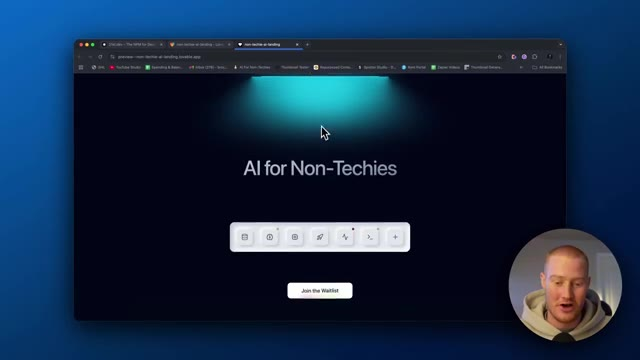
🔍 Agrandir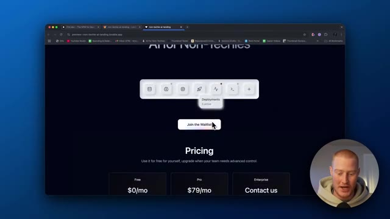
🔍 Agrandir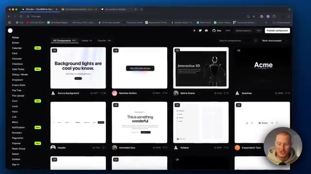
🔍 AgrandirDonc les composants d'interface utilisateur. Un composant, c'est comme chacun de ces éléments. Donc comme le texte, à quoi ça ressemble, cette animation, ça c'est un composant UI, ça c'est un composant UI, tous ces éléments. Donc vous pouvez faire défiler ici et voir n'importe quel composant UI qui vous plaît et l'ajouter simplement à votre application. Et je vais vous montrer exactement comment faire cela.
Interface & Outils : Navigateur web affichant la plateforme de composants UI 21st.dev et une application web en prévisualisation.
Contenu textuel & Code : Galerie de composants d'interface utilisateur (backgrounds, boutons, headers, sections de tarification).
Action / Démonstration : Navigation et défilement à travers la bibliothèque de composants UI pour expliquer les éléments d'interface.
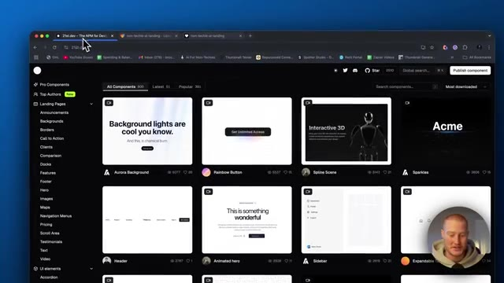
🔍 Agrandir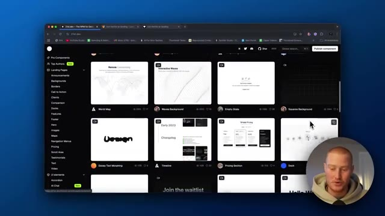
🔍 AgrandirDonc par exemple, vous pouvez voir juste ici, les lampes juste ici, construisez des lampes de la bonne manière. ceci, je l'ai copié dans mon application et maintenant ça ressemble à ça avec cette animation vraiment stylée que vous pouvez facilement ajouter à votre plateforme. Donc tout ce que vous avez à faire c'est de venir ici, de cliquer sur ceci, et c'est fou. Donc vous obtenez le code afin de juste copier et coller ceci dans votre application, mais il y a cette fonctionnalité à l'intérieur qui l'optimise pour lovable, pour bolt.new, pour Vercel, v0, toutes ces différentes plateformes. Donc vous pouvez voir que j'ai ceci juste ici prêt à l'emploi. Copier le prompt
Interface & Outils : Navigateur web affichant une plateforme de composants UI (Aceternity UI) avec panneau de code et options de copie de prompt.
Contenu textuel & Code : Code source React/TypeScript pour un composant d'animation de lampe ("Build lamps the right way"), options de prompt pour Lovable, v0.dev et Bolt.new.
Action / Démonstration : Le présentateur montre comment copier un composant d'UI animé pour l'intégrer facilement dans une application web à l'aide d'outils no-code ou d'IA.
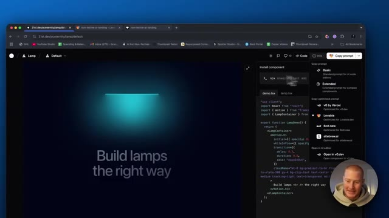
🔍 Agrandir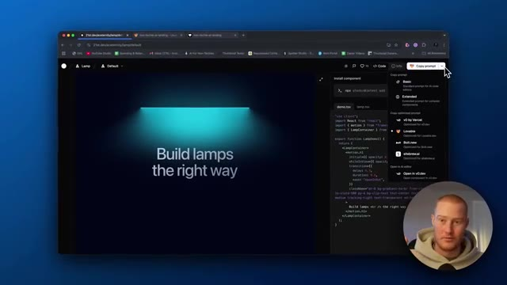
🔍 Agrandirpour Lovable. Et voilà. Ça a copié ce prompt. Ce que je vais faire, c'est que je vais aller sur Lovable maintenant. Et tout ce que je vais faire, c'est que je vais coller ceci et il va maintenant créer ce composant d'interface utilisateur et simplement le prendre et le mettre dans mon application exactement tel quel. Et nous pourrions évidemment le personnaliser. Donc tout d'abord, disons que c'était une application vide pour moi. Donc je vais copier ce prompt. Alors allons-y. Vous pouvez voir, j'ai maintenant cet ensemble de composants d'interface utilisateur. Nous pourrions venir ici et prévisualiser cette application. Regardez juste à quel point c'est bien. Et tout ce que j'ai fait, c'est simplement copier et coller ce code à l'intérieur de 21st.dev. Et nous pourrions revenir et nous pourrions trouver tout ce que nous voulons. Donc
Interface & Outils : Navigateur web affichant la plateforme de développement d'applications Lovable (lovable.dev).
Contenu textuel & Code : Interface utilisateur de Lovable, grille de projets, champ de saisie de prompt et barre latérale de l'éditeur.
Action / Démonstration : Navigation sur la plateforme Lovable et préparation de la saisie d'un prompt pour générer ou modifier une application.
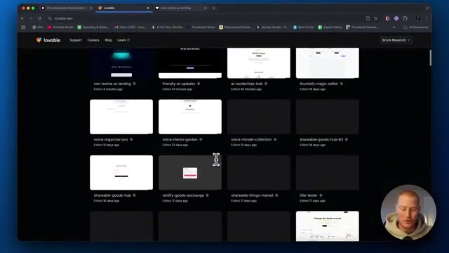
🔍 Agrandir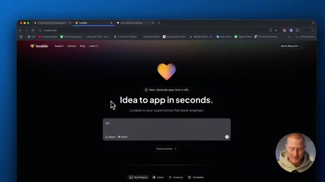
🔍 Agrandir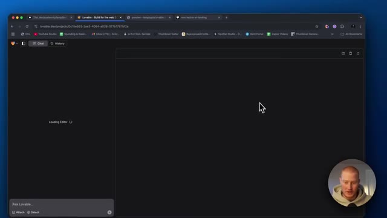
🔍 Agrandirpar exemple, si nous aimons ce bouton ici, comme vous l'avez vu dans le premier que j'ai construit, vous savez, j'ai copié ce bouton et l'ai essentiellement collé ici ainsi que ceci. Regardez ce petit dock ici qui ressemble presque à un clavier d'ordinateur. C'est tellement incroyable. Genre, ça a l'air juste, je ne sais pas comment l'expliquer, ça fait juste du bien à mes TOCs, genre ça a l'air si propre et je viens de trouver ça sur 21st.dev donc vous pouvez venir et trouver n'importe quoi, laissez-moi jouer avec encore d'autres choses pour que vous puissiez voir que nous pouvons ajouter ces témoignages animés, nous pouvons venir sur ce côté gauche et vous pouvez voir toutes ces différentes choses, donc pour les pages de destination, vous pouvez voir des éléments d'interface utilisateur comme par exemple
Interface & Outils : Navigateur web affichant une application web en cours de développement et la plateforme de composants 21st.dev.
Contenu textuel & Code : Composants d'interface utilisateur, dock interactif, boutons, typographie et grille de composants web.
Action / Démonstration : Navigation et démonstration d'un composant de dock interactif copié sur une page web.
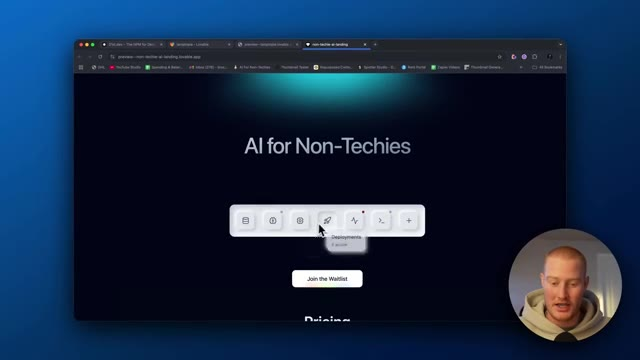
🔍 Agrandir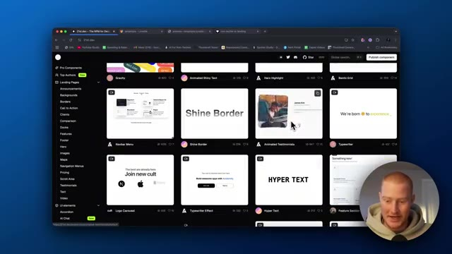
🔍 Agrandirnous pourrions arriver à genre avatar et voyons à quoi ressemble avatar pour une raison quelconque ceux-ci ne veulent pas se charger donc la seule chose qui se charge c'est quand je suis sur la page d'accueil mais laissez-moi juste continuer à faire défiler et trouver certaines de ces choses que nous aimons réellement et nous pourrions l'ajouter facilement à notre application d'accord donc si nous avons une sorte d'application de voix IA nous pourrions alors utiliser ce composant d'interface utilisateur qui a l'air super propre tout ce que nous avons à faire c'est de venir ici ce qui testons d'abord test test test genre ça a l'air super propre c'est génial donc tout ce que nous avons à faire c'est de venir ici choisir l'application pour laquelle nous essayons d'optimiser ceci nous allons utiliser Lovable parce que c'est mon sans code préféré
Interface & Outils : Navigateur web affichant la plateforme de composants 21st.dev.
Contenu textuel & Code : Composants d'interface utilisateur (UI), code source React/TSX, et commandes d'installation npm (`npx shadcn@latest add`).
Action / Démonstration : Navigation et exploration de différents composants UI interactifs sur la plateforme de développement 21st.dev.
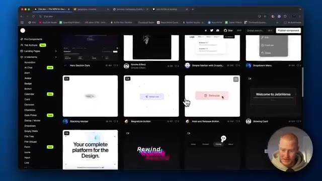
🔍 Agrandir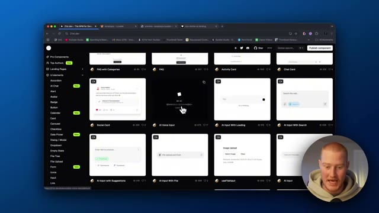
🔍 Agrandir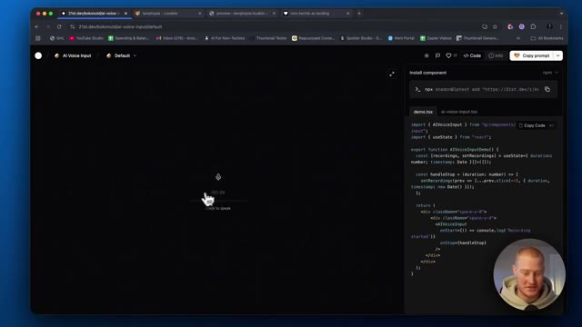
🔍 Agrandirplateforme de codage IA, copiez ceci, puis ce que je vais faire, c'est que je vais dire : implémente ce composant d'interface utilisateur blow the lamp, puis colle-le. Et voilà, il est en train de coller ceci et de le copier dans notre application. Donnons-lui une petite seconde et jetons-y un œil. Boum. C'est parti. Test, test, test. Comment ça va ? Ça a l'air super, mais changeons ceci. Change ça en mode sombre. Je vais faire une capture d'écran ici et ensuite lui faire savoir de quoi nous parlons parce que je veux que ce soit exactement comme ça. Je trouve que ça a vraiment un super look. OK, voilà. C'est maintenant en mode sombre. Ça a l'air génial. Jusqu'à présent, c'est une interface utilisateur magnifique pour notre application, sans utiliser le moindre code.
Interface & Outils : Lovable (plateforme de développement web IA) et un navigateur web affichant 21st.dev.
Contenu textuel & Code : Code source React/TypeScript, instructions d'installation npm, et prévisualisation d'un composant d'interface utilisateur d'entrée vocale (AI Voice Input).
Action / Démonstration : Copie et intégration d'un composant UI externe dans l'application via Lovable.
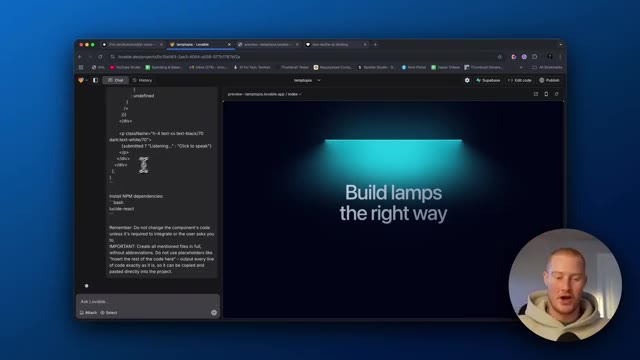
🔍 Agrandir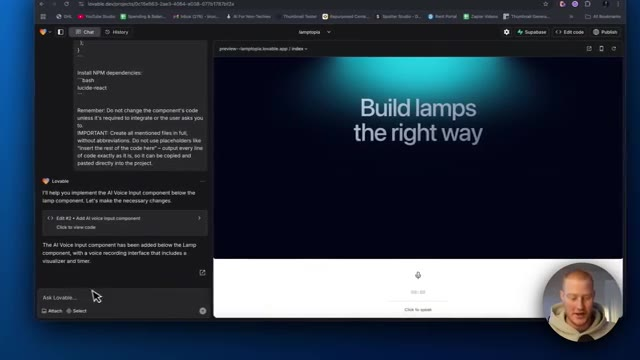
🔍 Agrandir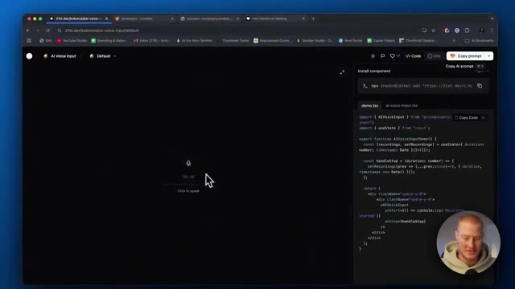
🔍 AgrandirDonc j'aime bien cette fonctionnalité d'animation de défilement ici. Alors ajoutons ça encore une fois. Copiez le prompt pour Lovable. Il est déjà optimisé pour Lovable et il aura maintenant une sorte d'effet de défilement comme celui-ci ajouté à notre application. Les gars, ça me souffle vraiment l'esprit. Je sais que j'exagère peut-être un peu la chose dans cette vidéo, mais c'est vraiment tellement cool pour moi.
Interface & Outils : Navigateur web avec interface de développement de composants UI et éditeur de code.
Contenu textuel & Code : Code source React/TypeScript pour les animations de défilement et instructions d'installation du composant.
Action / Démonstration : Démonstration et copie d'un prompt optimisé pour intégrer une animation de défilement dans Lovable.
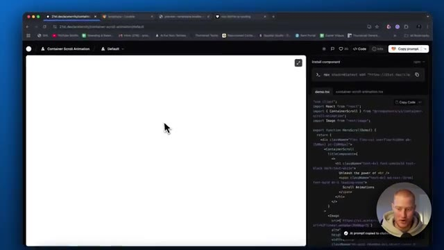
🔍 Agrandir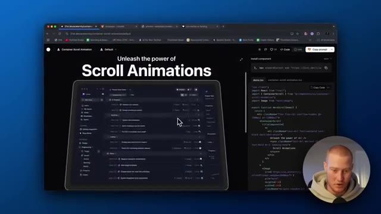
🔍 AgrandirEn utilisant Lovable, en utilisant Bolt, c'est super de construire des applications sympas et de créer des produits SaaS. Mais la plupart du temps, l'interface utilisateur n'est tout simplement pas très belle. Et la raison à cela, c'est que nous ne savons pas vraiment comment construire nous-mêmes ces composants d'interface utilisateur à moins de savoir coder. Le fait maintenant que nous ayons un répertoire comme celui-ci sur 21st.dev et que nous puissions copier et coller n'importe lequel d'entre eux dans nos applications, cela change la donne.
Interface & Outils : Lovable, navigateur web, interface de développement web, 21st.dev.
Contenu textuel & Code : Code source React, composants d'animation d'interface utilisateur (UI/UX), fenêtres de prévisualisation web.
Action / Démonstration : Démonstration de la création d'interfaces et de composants visuels pour applications web.
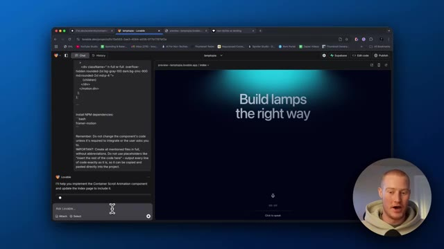
🔍 Agrandir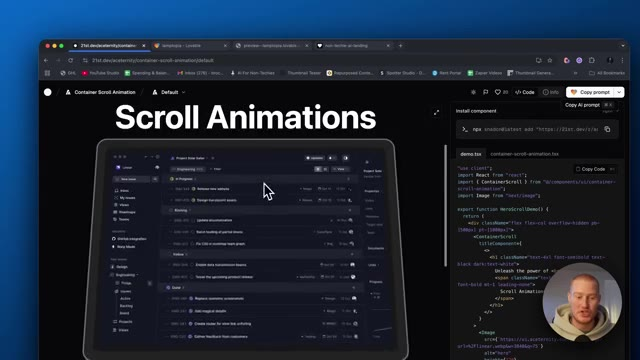
🔍 AgrandirNous pouvons maintenant créer des applications superbes visuellement. Fini les polices d'écriture très basiques, les éléments et les arrière-plans rudimentaires dans nos applications. Nous avons une application vraiment très cool. Donc je vais arrêter de insister là-dessus parce que c'est probablement agaçant à ce stade, mais ça me dépasse complètement. Bon, c'est parti. Alors voici une nouvelle animation de défilement. D'accord, donc si, pour une raison quelconque, nous avions quelque chose sur un iPad, nous pourrions simplement dire, tu sais, ajoute cette image à l'ipad et ensuite cela la mettra en valeur un peu comme, tu sais, ce qu'il y a juste ici. Ajoutons une chose de plus juste pour les besoins de cette vidéo, alors ajoutons maintenant, voyons voir, quelles sont des choses vraiment cool ici. D'accord, donc ce flux de chiffres ici, j'aime bien ça, donc si nous avons un genre de, attends
Interface & Outils : Navigateur web affichant Lovable et 21st.dev avec une vue incrustée (picture-in-picture) du présentateur Brock Mesarich.
Contenu textuel & Code : Code source React/JSX, dépendances NPM, composants d'interface utilisateur et aperçus de design web modernes.
Action / Démonstration : Présentation de la création d'applications visuellement sophistiquées et exploration de composants graphiques UI pour le développement web.
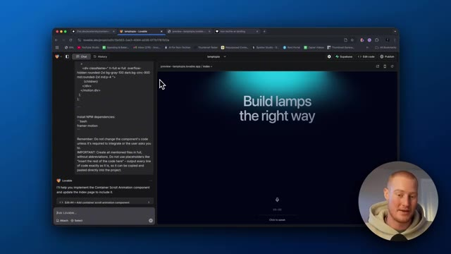
🔍 Agrandir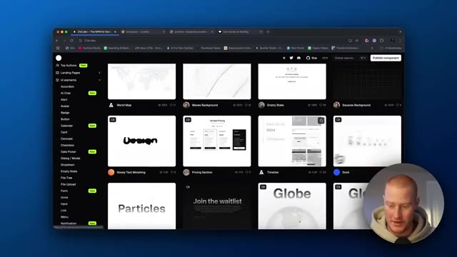
🔍 Agrandirliste pour notre liste de diffusion, ce qui fait qu'assurez-vous de vous inscrire à ma à ma liste de diffusion ci-dessous ia pour les non-techniciens Mais si nous avions une liste de diffusion ou quelque chose comme ça, nous pourrions montrer, d'accord, voici combien d'utilisateurs je me suis déjà inscrit. Copions donc cela. Ajoutons maintenant ceci pour montrer combien d'utilisateurs nous avons inscrits à notre liste de diffusion.
Interface & Outils : Navigateur web (Google Chrome), interface de composant web, code source React.
Contenu textuel & Code : Code source visible (imports React, composant NumberFlow, instructions d'installation npx shadcn@latest), message de chargement de la prévisualisation. [DESC_IMAGE_1] Navigation sur un site de composants web et présentation du code source d'un composant interactif.
Action / Démonstration : Explications face caméra et analyse conceptuelle des marchés.
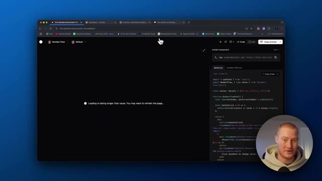
🔍 AgrandirBon, une dernière chose. J'essaie d'ajouter ce composant d'interface utilisateur numérique ici. Mais une autre chose que je veux mentionner, c'est que lorsque vous construisez votre application et que, disons, vous ajoutez ces différents composants d'interface utilisateur, vous devez juste en quelque sorte les identifier lorsque vous parlez dans le prompt. Donc par exemple, vous devez déterminer ce qu'est ce composant d'interface utilisateur de lampe, quel est son nom, et ensuite vous pouvez l'adresser et dire, ok, en dessous de ce composant de lampe, ajoutez ce composant. Et cela rend tellement plus facile de construire réellement votre application d'une manière intuitive. C'est donc un petit conseil pour vous les gars, mais voyons comment nous pourrions réellement ajouter ce dernier composant d'interface utilisateur ici. Bon, alors pour une raison quelconque, j'ai des problèmes à implémenter réellement cette petite, euh, fonctionnalité ici.
Interface & Outils : Navigateur web affichant l'interface de développement Lovable et la plateforme 21st.dev.
Contenu textuel & Code : Code source, messages d'erreur de l'assistant IA, et liste de composants UI (Landing Pages, Pro Components).
Action / Démonstration : Navigation et démonstration de l'intégration de composants d'interface utilisateur dans une application générée par IA.
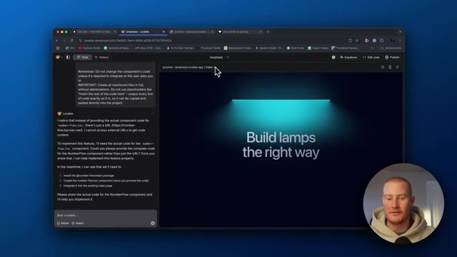
🔍 Agrandir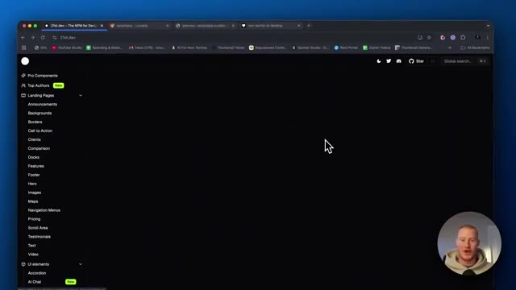
🔍 AgrandirDonc ne tenez pas compte de ça mais les gars, j'espère que vous avez tiré de la valeur de cette vidéo. C'est une façon vraiment cool. Je l'ai dit 10 fois. Je n'ai pas besoin de le répéter. Mais j'espère que vous avez tiré de la valeur. J'espère que cela change un peu la façon dont vous construisez vos applications avec Lovable. C'génial. Dites-moi si vous avez tiré de la valeur de ceci, abonnez-vous à la chaîne pour plus de hacks comme celui-ci et je vous vois dans la prochaine vidéo.
Interface & Outils : Navigateur web (Google Chrome), site 21st.dev, éditeur de code/panneau de prévisualisation.
Contenu textuel & Code : Code source React avec des instructions d'installation (`npx shadcn@latest add...`), des imports de composants et des fonctions de gestion d'état (`useState`, `NumberFlow`), ainsi qu'un aperçu interactif affichant la valeur "-3,243.5".
Action / Démonstration : Présentation de l'interface et du code d'un composant de flux de nombres pour une application web.
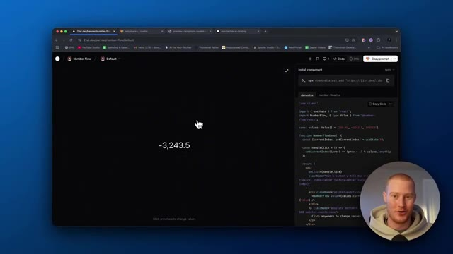
🔍 Agrandir